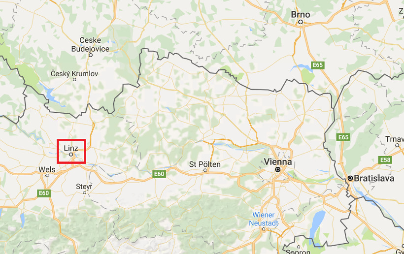
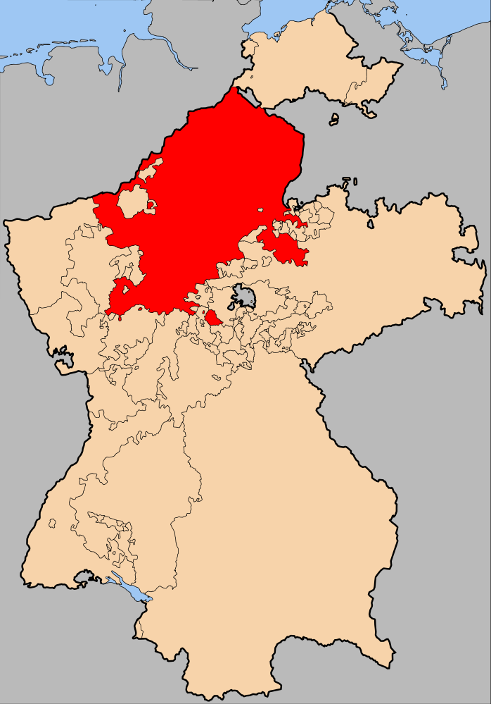
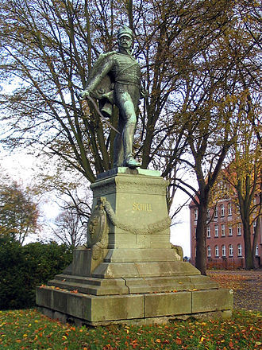

바그람을 향하여 - 형과 동생
게시: 2017-05-14T23:24:35+09:00
아스페른-에슬링 전투는 분명히 나폴레옹 같은 괴물에게도 큰 충격이었습니다. 그는 전투가 끝난 다음날부터 무려 36시간 동안 아무런 군사 행동을 일으키지 않았습니다. 전장에 나선 그에게는 어지간하면 있을 수 없는 일이었습니다. 그러나 그의 패기가 완전히 사라진 것은 아니었습니다. 전투 다음날인 5월 23일 아침부터 나폴레옹은 이미 이 처참한 패배를 포장하고 있었습니다. 그는 자신의 주된 선전 도구인 육군 회보(Le Bulletin de la Grande Armée)에 실릴 전투 결과에 대해, '공격해 온 오스트리아군은 원래 위치로 되돌아 가야 했고, 프랑스군이 전장의 지배자로 남았다'라고 뻔뻔스럽게 구술했습니다. 100% 틀린 말은 아니었으나, 진실과는 거리가 꽤 먼 선언문이었지요.
휘하 장군들은 아예 비엔나로 철수할 것을 주장했습니다. 극심한 피해를 입은 군단들을 재정비하고 패배에서 벗어나야 한다는 이유에서였습니다. 그러나 나폴레옹은 단칼에 이를 거부했습니다. 일단 철수를 시작하면 모든 것이 끝장이라는 것이 그의 생각이었습니다. 자신이 비엔나로 철수하면 카알 대공이 병력을 이끌고 그 뒤를 따를 것이고, 만약 오스트리아군이 비엔나에 집착하지 않고 아예 도나우 강 상류의 린츠(Linz)를 공격하기라도 한다면 프랑스군은 퇴로가 끊길 것을 두려워 하는 상황이 될 것이라는 것이었습니다. 그럴 경우 프랑스군은 둑이 무너지듯 프랑스-독일의 경계인 스트라스부르(Strasbourg)까지 철수해야 한다는 것이었지요. 실제로도 오스트리아군에서는 그렇게 프랑스군의 후방을 끊는 작전 이야기가 나오기도 했습니다만, 그럴 경우 오스트리아 제국에서 가장 부유한 지역 중 하나인 보헤미아(체코)가 무방비 상태가 되어버린다는 점 때문에 기각되었습니다. 오스트리아군이 무슨 생각을 하건 나폴레옹은 철수할 생각이 눈곱만큼도 없었습니다. 다행인 것은 프랑스군이 비엔나를 확고히 장악하고 있다는 것이었습니다. 비엔나는 오스트리아의 수도답게 식량과 탄약 등이 충분히 비축되어 있어 프랑스군은 여유있게 재정비에 집중할 수 있었습니다.

(빈과 린츠의 위치입니다. 나폴레옹이 빈을 점령하기 전에 카알 대공이 프랑스군 후방을 끊을 목적으로 이미 린츠 점령 작전을 시도한 바 있었지요. 물론 결과는 실패였습니다.)
빛나는 승리를 거둔 오스트리아군은 당연히 큰 축제 분위기였습니다. 그러나 이들에게도 행복과 기쁨만 넘쳐나는 것은 아니었습니다. 이미 카알 대공의 참모들은 이런 승리를 거두고도 아무런 성과를 거두지 못하고 전투 이전과 동일한 상태에서 프랑스군과 대치해야 하는 현실을 개탄하고 있었습니다. 이런 상황에서 카알 대공은 기분이 좋지 않았습니다. 애초에 나폴레옹과의 전쟁에 대해 그다지 내키지 않아 했던 그는 아스페른-에슬링에서의 깔끔하지 않은 승리를 분석해볼 수록 프랑스군과 또 싸울 엄두가 나지 않았습니다. 알고보니 오스트리아군의 수적 우세가 확고했음에도 불구하고 프랑스군을 격멸하지 못했다는 것을 뒤늦게 깨달은 것입니다.
카알 대공은 이 피비린내 나는 승리를 나폴레옹과의 평화 협상을 벌이는 도구로 삼아야 한다는 입장이었습니다. 이 견해는 오스트리아 제국이 처한 현실을 제대로 반영하는 것이었습니다. 오스트리아가 변변한 동맹도 없이 감히 혼자서 나폴레옹에게 도전한 것은 혼자 힘으로도 나폴레옹을 때려잡을 수 있다는 계산이 있었기 때문이 아니었습니다. 오스트리아 합스부르크 왕가는 일단 자신이 불을 당기기만 하면 프랑스의 압제 하에 신음하는 바이에른과 작센, 뷔르템베르크 및 프로이센의 독일 민족이 대거 봉기에 나설 것이라고 생각했습니다. 그리고 말로는 굳은 동맹인 러시아도 내심 나폴레옹의 프랑스를 견제하는 것이 분명해 보였으므로, 일단 나폴레옹이 첫 패배를 겪게 된다면 반-나폴레옹 연합전선에 러시아도 뛰어들 것으로 기대하고 있었지요. 당시 오스트리아의 변변한 동맹국이라고는 저 멀리 떨어진 섬나라 영국 하나였는데, 영국은 네덜란드나 북부 독일에 대규모 부대를 상륙시켜 프랑스의 뒤통수를 때려주겠다고 약속한 바 있었습니다.
그러나 이 모든 기대는 모두 한낱 꿈에 불과했습니다. 오스트리아의 기대대로 반-프랑스의 깃발 하에 봉기한 것은 저 티롤 산골짜기 촌놈들 뿐이었습니다. 이 산골짜기 촌사람들은 놀랍게도 잘 싸워 르페브르의 제7 군단을 묶어두는 기대 이상의 성과를 거둬주기는 했으나, 거기까지였습니다. 바이에른이나 작센은 여전히 나폴레옹 앞에서 살랑살랑 꼬리를 흔들며 그의 깃발 아래 오스트리아에게 총구를 겨누고 있었습니다. 나폴레옹에게 영혼까지 탈탈 털렸던 프로이센은 드디어 찾아온 복수 기회 앞에서 움찔움찔 거리는 것이 눈에 보였습니다. 원래부터 좀 덜 떨어진 편이었던 프로이센 왕 빌헬름 3세는 여전히 기가 죽어 있었지만, 그의 각료들은 모두 이런 기회를 그대로 흘려보내서는 안되며 당장 오스트리아와 함께 이 제5차 대불동맹전쟁에 참여해야 한다는 주장을 펼쳤습니다. 오스트리아는 심지어 프로이센이 거부하기 힘든 제안까지 던졌습니다. 프로이센이 오스트리아 편에서 참전해준다면 과거 오스트리아의 영토였던 폴란드 바르샤바 공국을 프로이센에게 넘겨주겠다는 제안을 한 것입니다. 그러나 결국 빌헬름 3세는 오스트리아의 간절한 도움 요청을 거부했습니다. 나폴레옹의 힘이 아직 건재한데다, 설령 오스트리아가 이긴다고 해도 그럴 경우 오스트리아가 기세등등해질텐데, 그건 독일권 세계의 주도권을 놓고 라이벌 관계에 있던 프로이센이 원하는 바가 결코 아니었기 때문이었습니다. 영국 해군의 상륙이요 ? 언제나 그렇지만 영국은 세치 혓바닥과 기니 금화만 뿌려댈 뿐, 자신들이 피를 흘릴 생각은 전혀 없는 것처럼 보였습니다. 그나마 이번 전쟁에서는 그 알량한 기니 금화조차 충분히 뿌리지 않았습니다. 영국은 오스트리아가 간곡히 요청한 추가적 전쟁 보조금 지급조차도 거부했던 것입니다.

(라인 연방의 지도입니다. 붉은 색으로 표시된 부분이 새로 만들어진 프랑스의 위성국가 베스트팔렌 왕국입니다.)
그러나 일단 전쟁이 시작되면 독일계 주민들이 봉기할 것이라는 오스트리아의 기대가 완전히 헛된 망상만은 아니었습니다. 오스트리아가 학수고대하던 일이 실제로 일어나는 듯 한 사건이 벌어진 것입니다. 나폴레옹이 프로이센으로부터 빼앗은 땅과 이런저런 독일계 소공국들을 모아 만든 베스트팔렌(Westphalen) 왕국에서는 그 허수아비 왕이자 나폴레옹의 동생인 제롬(Jerome)에 대해 불만이 많았습니다. 그러던 와중에, 베스트팔렌에서도 병력이 대거 징집되어 나폴레옹군의 후방 지원을 위해 파병되자, 무력의 공백 상황에서 반-나폴레옹 정서가 심각하게 무르익었습니다. 이런 위태위태한 상황에 불을 지른 것은 뜻 밖에도 베를린에 주둔하고 있던 프로이센 정규 경기병 연대였습니다. 1806년 아우어슈테트 전투에 소위로 참전했던 쉴(Ferdinand von Schill) 소령은 당시 베를린에서 경기병 연대 하나의 지휘관으로 복무하고 있었습니다. 쉴 소령은 제4차 동맹전쟁의 패배 이후 샤른호스트(Gerhard von Scharnhorst)나 그나이제나우(August Neidhardt von Gneisenau) 등의 개혁론자들과 함께 프로이센의 새로운 미래를 준비하는 운동에 참여하고 있었습니다. 그런데 그런 개혁 운동이 빌헬름 3세에 의해 불법화되자, 아예 애국적 무장 봉기에 나선 것입니다. 그는 나폴레옹이 란츠후트 기동전을 승리로 이끈 직후인 5월 초 부대 기동 훈련을 한다는 핑계를 대고 자신의 경기병 연대를 통째로 끌고 베스트팔렌으로 진격했습니다. 그는 처음에는 소규모 베스트팔렌 수비군을 간단히 제압하고 오히려 현지 주민들로부터 자원병을 추가 모집하며 기세를 올렸습니다. 그러나 프랑스의 보복을 두려워한 빌헬름 3세가 기대와는 달리 쉴 소령과 그의 경기병 연대를 반란군으로 규정하자 기가 죽었고, 프랑스에 충성하는 네덜란드군과 덴마크군이 쳐들어오자 속절없이 밀려날 수 밖에 없었습니다. 쉴 소령의 반란군은 5월 말 결국 항구 도시인 스트랄순트(Stralsund)에서 패배했고, 쉴 소령도 전사해버렸습니다.

(그가 전사한 스트랄순트에 건립되어 있는 쉴 소령의 동상입니다.)
이런 상황에서 오스트리아의 유일한 희망은 뜻하지 않은 패배에 나폴레옹이 시무룩해진 이 순간에 재빨리 유리한 조건으로 화평을 청하는 것이라고 카알 대공은 판단했습니다. 이건 아마 옳은 판단이었을 것입니다. 그러나 세상은 카알 대공이 원하는 대로 돌아가지 않았습니다. 일단 나폴레옹은 체면을 완전히 구긴 상태에서 누군가와 화평을 맺을 그런 인간이 아니었습니다. 그는 오스트리아와 화평할 생각이 전혀, 조금도 없었습니다. 그리고 화평을 원하지 않는 중요 인사가 하나 더 있었습니다. 바로 카알 대공의 형이자 오스트리아 제국의 카이저, 프란츠 1세였습니다.
(이건 23년 후인 1832년 그려진 프란츠 1세의 모습입니다. 그는 시민 계급의 혁명으로 끓어오르던 19세기 초 유럽에서 개혁에 저항했던 대표적인 반동 군주로 꼽힙니다.)
황제 프란츠 1세에게 있어 카알 대공은 밥만 축내는 여러 동생들 중 믿을 만한 능력을 갖춘 유일한 형제이기는 했으나, 그로 인해 끊임없이 자신의 인기를 갉아먹는 잠재적 경쟁자였습니다. 일찌기 조카 프란츠 1세의 교육을 맡았던 전임 황제 요제프 2세(Joseph II)는 어린 프란츠 1세에 대해 '자기 한몸 보존이 무엇보다 소중한, 전형적인 마마 보이'라고 평가한 적이 있었습니다. 그 본성이 크게 변하지 않았는지, 프란츠 1세에게 있어 나폴레옹 못지 않게 견제해야 하는 사람이 바로 카알 대공이었습니다. 그는 카알 대공을 오스트리아 전군의 원수(generalissimus)로 임명해놓고도, 카알 대공을 젖히고 그 참모장으로부터 직접 보고를 받고 내리는 등 카알 대공의 군내 입지를 끊임없이 흔들었습니다.
프란츠 1세의 입장은 단순 명료했습니다. 나폴레옹과 화평할 생각을 하지말고 싸워 꺾으라는 것이었습니다. 바르샤바 공국을 침공했다 거기서 죽만 쑤던 페르디난트 대공의 군대가 거기서 물러나 카알 대공과 합류하고, 또 북부 이탈리아를 침공했던 요한 대공의 군대도 돌아오면, 오스트리아군은 나폴레옹에게 맞설 충분한 병력을 갖추게 되는데 왜 화평을 하냐는 것이었지요. 게다가 프로이센에게 바르샤바 공국을 양보하겠다는 등의 굉장한 제안까지 해놓았으므로, 결국 프로이센도 오스트리아 편으로 돌아설 것이라는 것이 프란츠 1세의 여전한 희망이었습니다. 그렇잖아도 카알 대공의 다소 소극적인 지휘 때문에 매파 장군들은 카알 대공에 대한 불만이 많았기 때문에, 프란츠 1세의 그런 강경한 입장에 적극 호응했습니다. 이 모든 것은 가뜩이나 비관적이었던 카알 대공의 기분을 오히려 더 움츠러들게 만들었습니다. 오스트리아 내에서 유일하게 제 정신 박힌 사람이었던 그는 오스트리아 궁정과 군 수뇌부를 휩쓸고 있던 과도한 자아도취와 근거없는 자신감에 자신까지 휩쓸린다면 합스부르크 왕가의 존재 자체가 위험해진다고 생각했습니다. 그는 바그람 전투를 앞두고 있던 6월 말, 그의 삼촌인 테쉔(Teschen) 공작 알베르트에게 보내는 편지에서 이렇게 쓸 정도로 소극적인 자세를 가지고 있었습니다.
"또다시 전투를 벌여야만 하는 상황이 된다면, 저는 프랑스군에게 크게 한방 먹여줄 생각입니다. 그러나 왕조를 위태롭게 할 만한 모험은 전혀 하지 않거나 하더라도 최소화할 생각입니다."
원래 싸움은 기 싸움이 절반이라고 하는데, 나폴레옹과 카알 대공의 2차전은 시작하기도 전부터 카알이 절반은 지고 들어가는 경기가 되어가고 있었습니다.